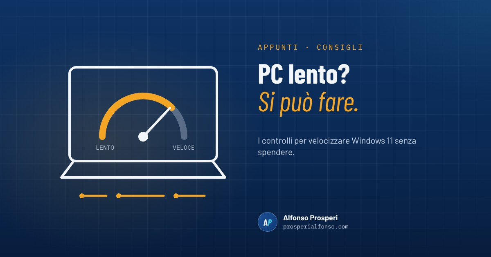

Il computer ci mette un'eternità ad accendersi, le finestre si aprono a scatti, la ventola gira sempre. Prima di pensare a un PC nuovo vale la pena provare qualche intervento: spesso il problema si risolve in mezz'ora e senza spendere niente. Le indicazioni sono per Windows 11.
1. Riavvia davvero e fai gli aggiornamenti
Sembra banale, ma "Arresta il sistema" spesso non chiude tutto come un Riavvia. Poi apri Impostazioni > Windows Update e installa gli aggiornamenti in attesa: correggono errori e problemi di prestazioni, oltre a tenere il PC al sicuro.
2. Togli i programmi che partono da soli
Molti programmi si avviano insieme a Windows e restano accesi in sottofondo. Vai in Impostazioni > App > Avvio (oppure premi Ctrl + Maiusc + Esc per aprire Gestione attività) e disattiva quelli che non ti servono subito all'accensione. Non disattivare l'antivirus e i driver di audio, video o touchpad se non sai a cosa servono.
3. Disinstalla quello che non usi
Da Impostazioni > App > App installate rimuovi programmi di prova, giochi dimenticati e utility preinstallate dal produttore. Meno programmi significa meno processi in sottofondo e meno spazio occupato.
4. Libera spazio sul disco
Quando il disco è quasi pieno, Windows rallenta. In Impostazioni > Sistema > Archiviazione trovi i Suggerimenti per la pulizia e puoi attivare il Sensore memoria, che svuota da solo cestino e file temporanei. Non servono più programmi esterni di "pulizia": quelli integrati bastano e sono più sicuri.
5. Controlla il browser
Spesso il "PC lento" è in realtà il browser: decine di schede aperte e estensioni installate e dimenticate. Chiudi le schede che non servono e rimuovi le estensioni che non usi.
6. Escludi un virus
Un programma malevolo può consumare risorse in sottofondo. Microsoft Defender, già incluso in Windows, è sufficiente per la maggior parte delle persone: da Sicurezza di Windows avvia un'analisi completa. Per altri consigli sulla sicurezza c'è la guida alla cybersecurity.
Se non basta: l'hardware
- SSD al posto del vecchio disco: è l'intervento che fa la differenza più grande su un PC di qualche anno, sia all'avvio sia nell'uso quotidiano.
- Più RAM: con 8 GB si lavora, con 16 GB si sta più tranquilli se si tengono aperti molti programmi.
Su molti portatili questi componenti si possono sostituire con una spesa contenuta, ma conviene farsi consigliare da un tecnico.
E se hai ancora Windows 10?
Il supporto ordinario di Windows 10 è terminato a ottobre 2025. Se il computer è compatibile, conviene passare a Windows 11, gratuito per chi ha Windows 10 originale. Se non lo è, valuta la sostituzione: un PC senza aggiornamenti diventa via via più esposto ai rischi.